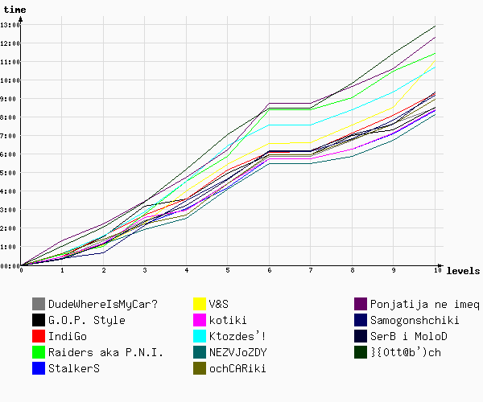

Игра №43
Тип игры: Закрытая
Описание: Команда-организатор: Dirty.
Принадлежности: 1. 2 автомобиля
2. Фонарик
3. Сотовый телефон
4. Доступ в Интернет
5. Цифровой фотоаппарат
6. Зеркальце
7. Чайная чашка с блюдцем
| Место | Команда | Уровней пройдено | Время уровней | Всего | |
|---|---|---|---|---|---|
| Активного | Штрафы | ||||
| 1 | НЕЗВЁЗДЫ | 10 | 09:54:56 | -01:48:30 | 08:06:26 |
| 2 | StalkerS | 10 | 09:15:44 | -54:00 | 08:21:44 |
| 3 | котики | 10 | 10:08:04 | -01:44:18 | 08:23:46 |
| 4 | DudeWhereIsMyCar? | 10 | 10:01:00 | -01:33:18 | 08:27:42 |
| 5 | G.O.P. Style | 10 | 10:06:16 | -01:36:06 | 08:30:10 |
| 6 | очCARики | 10 | 08:59:13 | -01:00 | 08:58:13 |
| 7 | Самогонщики | 10 | 09:40:43 | -31:00 | 09:09:43 |
| 8 | IndiGo | 10 | 10:33:56 | -01:19:00 | 09:14:56 |
| 9 | СерБ и МолоД | 10 | 10:39:08 | -01:17:36 | 09:21:32 |
| 10 | Ктоздесь! | 10 | 10:41:37 | -00:24 | 10:41:13 |
| 11 | V&S; | 10 | 11:21:59 | -20:30 | 11:01:29 |
| 12 | Raiders aka P.N.I. | 10 | 10:56:41 | 29:36 | 11:26:17 |
| 13 | Понятия не имею | 10 | 11:53:18 | 25:00 | 12:18:18 |
| 14 | }{0тт@бь)ч | 10 | 12:54:27 | 0 | 12:54:27 |

| 1 | 2 | 3 | 4 | 5 | 6 | 7 | 8 | 9 | 10 | ||
| 1 | StalkerS 20:19:23 | Самогонщики 20:39:15 | Самогонщики 22:09:26 | очCARики 22:42:15 | StalkerS 00:10:09 | StalkerS 01:43:28 | очCARики 02:15:41 шт. -17:00 | очCARики 02:44:02 шт. 20:00 | очCARики 03:36:39 шт. -04:00 | очCARики 04:59:13 | 1 |
| 2 | СерБ и МолоД 20:20:32 | Raiders aka P.N.I. 21:01:08 | очCARики 22:13:29 | НЕЗВЁЗДЫ 22:51:53 | очCARики 00:22:46 | НЕЗВЁЗДЫ 01:49:40 | StalkerS 02:30:34 шт. -47:00 | StalkerS 03:01:42 | StalkerS 03:58:58 шт. -07:00 | StalkerS 05:15:44 | 2 |
| 3 | DudeWhereIsMyCar? 20:21:34 | V&S; 21:07:23 | StalkerS 22:15:21 | StalkerS 23:03:19 | НЕЗВЁЗДЫ 00:26:22 | котики 01:53:41 | Самогонщики 02:34:17 шт. -26:30 | Самогонщики 03:15:53 | Самогонщики 04:20:21 шт. -04:30 | Самогонщики 05:40:43 | 3 |
| 4 | НЕЗВЁЗДЫ 20:22:51 | СерБ и МолоД 21:10:14 | V&S; 22:16:19 | котики 23:09:08 | котики 00:35:11 | очCARики 01:58:41 | НЕЗВЁЗДЫ 03:15:46 шт. -01:26:00 | НЕЗВЁЗДЫ 03:38:03 | НЕЗВЁЗДЫ 04:32:40 шт. -02:30 | НЕЗВЁЗДЫ 05:54:56 | 4 |
| 5 | Самогонщики 20:23:31 | StalkerS 21:12:15 | НЕЗВЁЗДЫ 22:17:03 | СерБ и МолоД 23:15:04 | СерБ и МолоД 00:37:25 | G.O.P. Style 02:01:57 | котики 03:25:29 шт. -01:31:48 | котики 03:58:34 | котики 04:52:30 шт. -02:30 | DudeWhereIsMyCar? 06:01:00 | 5 |
| 6 | V&S; 20:26:17 | котики 21:22:29 шт. -10:00 | СерБ и МолоД 22:22:17 | DudeWhereIsMyCar? 23:24:56 | Самогонщики 00:40:11 | Самогонщики 02:07:44 | DudeWhereIsMyCar? 03:25:37 шт. -01:08:18 | DudeWhereIsMyCar? 04:18:24 | СерБ и МолоД 04:52:57 шт. -01:30 | G.O.P. Style 06:06:16 | 6 |
| 7 | IndiGo 20:26:42 | очCARики 21:23:51 | котики 22:43:52 | Самогонщики 23:29:44 | DudeWhereIsMyCar? 00:48:00 | СерБ и МолоД 02:10:14 | IndiGo 03:25:52 шт. -01:14:00 | СерБ и МолоД 04:18:57 | G.O.P. Style 04:55:26 шт. -07:00 | котики 06:08:04 | 7 |
| 8 | G.O.P. Style 20:27:50 | НЕЗВЁЗДЫ 21:29:04 шт. -20:00 | Raiders aka P.N.I. 22:46:19 | IndiGo 23:39:38 | G.O.P. Style 01:03:35 | IndiGo 02:11:47 | G.O.P. Style 03:26:03 шт. -01:24:06 | Ктоздесь! 04:22:30 | DudeWhereIsMyCar? 05:11:30 | IndiGo 06:33:56 | 8 |
| 9 | котики 20:27:57 | G.O.P. Style 21:32:40 | IndiGo 22:47:23 | G.O.P. Style 23:41:01 шт. -05:00 | IndiGo 01:12:44 | DudeWhereIsMyCar? 02:17:09 | V&S; 03:26:03 шт. -50:30 | V&S; 04:23:27 | Ктоздесь! 05:20:21 | СерБ и МолоД 06:39:08 | 9 |
| 10 | Raiders aka P.N.I. 20:36:35 | Ктоздесь! 21:36:23 | DudeWhereIsMyCar? 22:49:34 | V&S; 00:00:41 | V&S; 01:25:14 | V&S; 02:35:23 | СерБ и МолоД 03:26:26 шт. -01:16:06 | IndiGo 04:26:50 | V&S; 05:21:22 | Ктоздесь! 06:41:37 | 10 |
| 11 | очCARики 20:37:36 | IndiGo 21:40:52 шт. -05:00 | Ктоздесь! 22:52:11 | Raiders aka P.N.I. 00:32:00 | Raiders aka P.N.I. 01:52:18 | Ктоздесь! 03:34:08 | Ктоздесь! 03:34:33 шт. -00:24 | G.O.P. Style 04:28:28 | IndiGo 05:24:11 | Raiders aka P.N.I. 06:56:41 | 11 |
| 12 | Ктоздесь! 20:38:44 | DudeWhereIsMyCar? 21:43:44 шт. -25:00 | G.O.P. Style 23:11:54 | Ктоздесь! 00:32:29 | Понятия не имею 02:18:05 | Raiders aka P.N.I. 03:52:38 timeout. 30 мин. | Raiders aka P.N.I. 03:53:01 шт. -00:24 | Raiders aka P.N.I. 04:33:59 | Raiders aka P.N.I. 05:59:01 | V&S; 07:21:59 timeout. 30 мин. | 12 |
| 13 | }{0тт@бь)ч 21:00:31 | }{0тт@бь)ч 22:04:44 | }{0тт@бь)ч 23:24:18 | Понятия не имею 00:50:42 | Ктоздесь! 02:25:38 | Понятия не имею 04:18:32 timeout. 30 мин. | Понятия не имею 04:18:45 | Понятия не имею 05:13:32 | Понятия не имею 06:11:00 | Понятия не имею 07:53:18 | 13 |
| 14 | Понятия не имею 21:18:33 | Понятия не имею 22:19:25 шт. -05:00 | Понятия не имею 23:31:39 | }{0тт@бь)ч 01:11:47 | }{0тт@бь)ч 03:03:49 | }{0тт@бь)ч 04:29:12 | }{0тт@бь)ч 04:29:43 | }{0тт@бь)ч 05:47:59 | }{0тт@бь)ч 07:25:51 | }{0тт@бь)ч 08:54:27 | 14 |
| 1 | 2 | 3 | 4 | 5 | 6 | 7 | 8 | 9 | 10 |
Уровень 1.
| № | Команда | Старт | Завершение | Штраф | Продолжительность | Бонусы |
|---|---|---|---|---|---|---|
| 1 | StalkerS | 20:00:09 | 20:19:23 | 19:14 | ||
| 2 | СерБ и МолоД | 20:00:08 | 20:20:32 | 20:24 | ||
| 3 | DudeWhereIsMyCar? | 20:00:10 | 20:21:34 | 21:24 | ||
| 4 | НЕЗВЁЗДЫ | 20:00:08 | 20:22:51 | 22:43 | ||
| 5 | Самогонщики | 20:00:09 | 20:23:31 | 23:22 | ||
| 6 | V&S; | 20:00:11 | 20:26:17 | 26:06 | ||
| 7 | IndiGo | 20:00:12 | 20:26:42 | 26:30 | ||
| 8 | G.O.P. Style | 20:00:14 | 20:27:50 | 27:36 | ||
| 9 | котики | 20:00:09 | 20:27:57 | 27:48 | ||
| 10 | Raiders aka P.N.I. | 20:00:13 | 20:36:35 | 36:22 | ||
| 11 | очCARики | 20:00:09 | 20:37:36 | 37:27 | ||
| 12 | Ктоздесь! | 20:00:14 | 20:38:44 | 38:30 | ||
| 13 | }{0тт@бь)ч | 20:00:21 | 21:00:31 | 01:00:10 | ||
| 14 | Понятия не имею | 20:00:09 | 21:18:33 | 01:18:24 |
Задание Полевое :
ВО ВСЕЙ нашей ИГРЕ все ПОЛЕВЫЕ ключи содержат ТОЛЬКО английские буквы и цифры. русских букв в ПОЛЕВЫХ ключах нет. в каждом конкретном полевом ключе есть ЛИБО ТОЛЬКО СТРОЧНЫЕ буквы ЛИБО ТОЛЬКО ЗАГЛАВНЫЕ. то есть, нет такого ключа, где были бы и строчные буквы, и заглавные. цифры могут встретиться где угодно, на них никаких ограничений нет.
ключи для ШТАБНЫХ уровней бывают разные, но каждый конкретный ключ может состоять ЛИБО ТОЛЬКО ИЗ РУССКИХ букв, ЛИБО ТОЛЬКО ИЗ АНГЛИЙСКИХ. то есть, нет таких штабных ключей, в которых были бы одновременно и русские буквы, английские. цифры могут встретиться где угодно, на них никаких ограничений нет.
Контакты для связи по проблемам в игре:
+79263499158 (Богдан)
ICQ: 371243590 (Катя)
Тут Алису осенило.
– Поэтому здесь и накрыто к чаю? – спросила она.
– Да, – отвечал Болванщик со вздохом. – Здесь всегда пора пить чай. Мы не успеваем даже посуду вымыть!
– И просто пересаживаетесь, да? – догадалась Алиса.
– Совершенно верно, – сказал Болванщик. – Выпьем чашку и пересядем к следующей.
Вы - болванщики, дорогие друзья! ;) Да, да, возьмите чайные принадлежности, запомните Вашу грустную историю: ’Видите ли, по дикому недоразумению время думает, что я хочу убить его — поэтому оно для меня палец о палец не ударит! Оттого у меня всегда шесть вечера и мне пора пить чай. Не хотите составить компанию?’ и отправляйтесь на смотровую площадку на Воробьевых Горах. Агентов на уровне несколько, а вам нужен только один из них. Ему нужно слово в слово рассказать вашу историю.
Формат ключа:
выданный агентом код

Ответ:
Суть уровня — игрок задает всем прохожим фразу, пытаясь отыскать агента. Агент откажется пить чай, но "откупится" от игрока каким–то предметом для чаепития. Агентов на уровне несколько — каждый отдает какой–то определенный предмет, но только на предметах одного агента написан ключ. Таким образом мы избавляемся от случаев, когда команды ничего не делают, а только палят других, т.к. знать какой агент верный будут те, кто нашел всех (не идеальный вариант, но это хотя бы усложняет задачу тем, кто палит). Кроме кода от флешмоб-уровня, игрок получает в шоколадке еще и кусочек карты от пиратского уровня.
Задание Координаторское :
Июльский полдень золотой (*)
Сияет так светло,
В неловких маленьких руках
Упрямится весло,
И нас теченьем далеко
От дома унесло.
Безжалостные!
В жаркий день,
В такой сонливый час,
Когда бы только подремать,
Не размыкая глаз,
Вы требуете, чтобы я
Придумывал рассказ.
Напишите день и месяц приключений Алисы в Стране Чудес. Ах да, и в Зазеркалье.
Формат ключа:
cx + DDMM + DDMM.
Бонусный уровень
Вот одна из задач, придуманных Льюисом Кэрроллом:
70% инвалидов потеряли глаз, 75% — ухо, 80% — руку, и 85% — ногу. Каков минимальный возможный процент инвалидов, лишившихся одновременно глаза, уха, руки и ноги?
Тот член вашей команды, который решит эту задачку быстрее остальных, должен быть на этой точке в 21-00.
Ответ:
четвертое мая находится очень легко поиском по русскому тексту произведения по словам "месяц" и "число". четвертое ноября в явном виде упоминается в одном из первых комментариев гарднера к ATTLG.
Уровень 2.
| № | Команда | Старт | Завершение | Штраф | Продолжительность | Бонусы |
|---|---|---|---|---|---|---|
| 1 | Самогонщики | 20:23:31 | 20:39:15 | 15:44 | ||
| 2 | Raiders aka P.N.I. | 20:36:35 | 21:01:08 | 24:33 | ||
| 3 | V&S; | 20:26:17 | 21:07:23 | 41:06 | ||
| 4 | котики | 20:27:57 | 21:22:29 | шт. -10:00 | 44:32 | |
| 5 | НЕЗВЁЗДЫ | 20:22:51 | 21:29:04 | шт. -20:00 | 46:13 | |
| 6 | очCARики | 20:37:36 | 21:23:51 | 46:15 | ||
| 7 | СерБ и МолоД | 20:20:32 | 21:10:14 | 49:42 | ||
| 8 | StalkerS | 20:19:23 | 21:12:15 | 52:52 | ||
| 9 | Понятия не имею | 21:18:33 | 22:19:25 | шт. -05:00 | 55:52 | |
| 10 | DudeWhereIsMyCar? | 20:21:34 | 21:43:44 | шт. -25:00 | 57:10 | |
| 11 | Ктоздесь! | 20:38:44 | 21:36:23 | 57:39 | ||
| 12 | }{0тт@бь)ч | 21:00:31 | 22:04:44 | 01:04:13 | ||
| 13 | G.O.P. Style | 20:27:50 | 21:32:40 | 01:04:50 | ||
| 14 | IndiGo | 20:26:42 | 21:40:52 | шт. -05:00 | 01:09:10 |
Задание Полевое :
– Я хотел сказать, – обиженно проговорил Додо, – что нужно устроить Бег по кругу. Тогда мы вмиг высохнем!
– А что это такое? – спросила Алиса.
Прежде, чем найти ключ, Алиса провалилась под землю и заглянула по ту сторону зеркала.
Формат ключа:
найденный код.
Она робко покосилась на настоящую Королеву, но та только милостиво улыбнулась и сказала:
– Это легко можно устроить. Если хочешь, становись Белой Королевской Пешкой. Крошка Лили еще слишком мала для игры! К тому же ты сейчас стоишь как раз на второй линии. Доберешься до восьмой, станешь Королевой…
Кольцевая линия Метро.
Ответ:
задание о том, что искать надо в метро и на обратной стороне зеркала. зеркала в метро на каждой платформе в самом начале, огромные такие. ""бег по кругу"" — о том, что искать надо на кольцевой. никакого указания станции в задании нет! оно появляется только в первой подсказке — со второй линии на восьмую можно доехать по кольцу — с павелецкой до таганской, выходишь, заглядываешь за зеркало — и там код. ЦИТАТЫ: 00. AIW 01. ATTLG
Уровень 3.
| № | Команда | Старт | Завершение | Штраф | Продолжительность | Бонусы |
|---|---|---|---|---|---|---|
| 1 | НЕЗВЁЗДЫ | 21:29:04 | 22:17:03 | 47:59 | ||
| 2 | очCARики | 21:23:51 | 22:13:29 | 49:38 | ||
| 3 | StalkerS | 21:12:15 | 22:15:21 | 01:03:06 | ||
| 4 | DudeWhereIsMyCar? | 21:43:44 | 22:49:34 | 01:05:50 | ||
| 5 | IndiGo | 21:40:52 | 22:47:23 | 01:06:31 | ||
| 6 | V&S; | 21:07:23 | 22:16:19 | 01:08:56 | ||
| 7 | СерБ и МолоД | 21:10:14 | 22:22:17 | 01:12:03 | ||
| 8 | Понятия не имею | 22:19:25 | 23:31:39 | 01:12:14 | ||
| 9 | Ктоздесь! | 21:36:23 | 22:52:11 | 01:15:48 | ||
| 10 | }{0тт@бь)ч | 22:04:44 | 23:24:18 | 01:19:34 | ||
| 11 | котики | 21:22:29 | 22:43:52 | 01:21:23 | ||
| 12 | Самогонщики | 20:39:15 | 22:09:26 | 01:30:11 | ||
| 13 | G.O.P. Style | 21:32:40 | 23:11:54 | 01:39:14 | ||
| 14 | Raiders aka P.N.I. | 21:01:08 | 22:46:19 | 01:45:11 |
Задание Полевое :
Поперек бежали прямые ручейки, а аккуратные живые изгороди делили пространство между ручейками на равные квадраты.
— По–моему, Зазеркалье страшно похоже на шахматную доску, – сказала наконец Алиса…– Здесь играют в шахматы! Весь этот мир – шахматы!
После чая вам полагается десерт. Отправляйтесь к ресторанам "Зазеркалье" и "Семь Пятниц", там вас уже ждут. Боги из машин снабдят вас недостающими для игры картами. И, не забывайте — Ключ на кубе!
Формат ключа:
найденный код
Ресторан "Семь пятниц" — Воронцовская, 6.
Вам необходимо сложить карту из трех частей, а затем, с помощью легенды "пройти" по карте, определив место, где находится ключ.
Куб — вентиляционная будка во дворе дома №35, что напротив нового молока.
Ответ:
три куска карты + три легенды. Две - в машинах у страны чудес и у Семи пятниц, и один - выдается вместе с шоколадкой на флешмобе, вместе с ключом. по карте и легенде, собранным воедино, можно вычислить двор, в котором находится куб, на котором находится ключ.
Задание Координаторское :
— Значит, так: «варкалось» – это четыре часа пополудни, когда пора уже варить обед.
– Понятно, – сказала Алиса, – а «хливкие»?
– «Хливкие» – это хлипкие и ловкие. «Хлипкие» значит то же, что и «хилые». Понимаешь, это слово как бумажник. Раскроешь, а там два отделения! Так и тут – это слово раскладывается на два!
Эта московская площадь разложилась на две. Cтарое название состоит из трех слогов. Первым слогом заканчивается имя одного из заглавных героев Кэрролла. Со второго слога начинается название города, где похоронен Чарльз Лютвидж Доджсон. А третьим слогом заканчивается имя автора нашего любимого перевода книг об Алисе на русский язык.
Формат ключа:
сх + современное название одной из двух площадей
Ответ:
площадь Ногина: бруНО ГИлфордское кладбище НиНА Демурова
Уровень 4.
| № | Команда | Старт | Завершение | Штраф | Продолжительность | Бонусы |
|---|---|---|---|---|---|---|
| 1 | G.O.P. Style | 23:11:54 | 23:41:01 | шт. -05:00 | 24:07 | |
| 2 | котики | 22:43:52 | 23:09:08 | 25:16 | ||
| 3 | очCARики | 22:13:29 | 22:42:15 | 28:46 | ||
| 4 | НЕЗВЁЗДЫ | 22:17:03 | 22:51:53 | 34:50 | ||
| 5 | DudeWhereIsMyCar? | 22:49:34 | 23:24:56 | 35:22 | ||
| 6 | StalkerS | 22:15:21 | 23:03:19 | 47:58 | ||
| 7 | IndiGo | 22:47:23 | 23:39:38 | 52:15 | ||
| 8 | СерБ и МолоД | 22:22:17 | 23:15:04 | 52:47 | ||
| 9 | Понятия не имею | 23:31:39 | 00:50:42 | 01:19:03 | ||
| 10 | Самогонщики | 22:09:26 | 23:29:44 | 01:20:18 | ||
| 11 | Ктоздесь! | 22:52:11 | 00:32:29 | 01:40:18 | ||
| 12 | V&S; | 22:16:19 | 00:00:41 | 01:44:22 | ||
| 13 | Raiders aka P.N.I. | 22:46:19 | 00:32:00 | 01:45:41 | ||
| 14 | }{0тт@бь)ч | 23:24:18 | 01:11:47 | 01:47:29 |
Задание Полевое :
Алиса тут же догадалась, что он ищет веер и белые перчатки, и принялась их искать, желая по доброте сердечной ему помочь.
Всем известно, что на dirty.ru не работает поиск.
Формат ключа:
код от Мыши
поможет? — подумала Алиса. — А уж говорить–то она, наверное, умеет — что тут
такого, сегодня и не то бывало! Заговорю с ней — попытка не пытка". И она
заговорила:
— О Мышь!
Отправляйтесь на точку 55°42’19"N, 37°31’25"E и слушайте повторяющийся каждые 10 секунд писк. Найдите источник звука, рядом сидит Мышь.
(надо было воспользоваться поиском по сайту dirty.ru в google или yandex с запросом "веер и белые перчатки", и прочитать тот комментарий, который выдает поисковая система, например http://dirty.ru/comments/103993#1953270).
Ответ:
По тексту задания необходимо догадаться, что нужно искать ""веер и белые перчатки"" по сайту dirty.ru. Комментарии, которые будут находиться по такому запросу google’ом и yandex’ом будут содержать текст про Мышь и координаты точки Х (недалеко от метеостанции МГУ). Каждый комментарий, который можно найти на сайте по запросу ""веер и белые перчатки"" будет содержать вот что: ""Так, давайте продолжим. Заговорить, что ли, с этой Мышью? Может, она мне чем–нибудь поможет? — подумала Алиса. — А уж говорить–то она, наверное, умеет — что тут такого, сегодня и не то бывало! Заговорю с ней — попытка не пытка"". И она заговорила: — О Мышь! Поговорить с Мышью Вам, скорее всего, не удастся, но она поможет Вам получить ключ. 55°42’19""N, 37°31’25""E — приезжайте сюда и найдите ее домик по писку, сама Мышь недалеко от входа."" На карте http://maps.yandex.ru/moscow?upoint=a1bea6ac69bd обозначена метеостанция МГУ, которая раз в 10 секунд издает достаточно громкий и высокий звук (писк). проверено — даже вечером, когда еще слышно мичуринский и ломоносовский, с Точки Х слышно этот писк, однако из–за отражения его от стен соседних зданий, сразу определить источник звука сложно. Команды выходят на точку Х, слушают звук и ищут его источник. Рядом с входом в метеостанцию будет агент в костюме Мыши, он дает задание, выполнив его участники получают ключ. Задание от Мыши: Мышь дает две колоды карт, без одной карты. Один член команды, не выпуская карт из своих рук, должен найти, какая карта непарная. В обмен на непарную карту получают бумажку с ключом.
Задание Координаторское :
..– О Мышь! Не знаете ли вы, как выбраться из этой лужи? Мне так надоело здесь плавать, о Мышь!
Алиса считала, что именно так и следует обращаться к мышам. Опыта у нее никакого не было, но она вспомнила учебник латинской грамматики, принадлежащий ее брату.
""Именительный – Мышь,
Родительный – Мыши,
Дательный – Мыши,
Винительный – Мышь,
Звательный – О Мышь!
А как же на самом деле будет родительный падеж от слова Мышь на латыни?
Формат ключа:
cx + латинская форма
http://cx.dirty.ru/20060826/c02/latin.htm
Уровень 5.
| № | Команда | Старт | Завершение | Штраф | Продолжительность | Бонусы |
|---|---|---|---|---|---|---|
| 1 | StalkerS | 23:03:19 | 00:10:09 | 01:06:50 | ||
| 2 | Самогонщики | 23:29:44 | 00:40:11 | 01:10:27 | ||
| 3 | Raiders aka P.N.I. | 00:32:00 | 01:52:18 | 01:20:18 | ||
| 4 | СерБ и МолоД | 23:15:04 | 00:37:25 | 01:22:21 | ||
| 5 | G.O.P. Style | 23:41:01 | 01:03:35 | 01:22:34 | ||
| 6 | DudeWhereIsMyCar? | 23:24:56 | 00:48:00 | 01:23:04 | ||
| 7 | V&S; | 00:00:41 | 01:25:14 | 01:24:33 | ||
| 8 | котики | 23:09:08 | 00:35:11 | 01:26:03 | ||
| 9 | Понятия не имею | 00:50:42 | 02:18:05 | 01:27:23 | ||
| 10 | IndiGo | 23:39:38 | 01:12:44 | 01:33:06 | ||
| 11 | НЕЗВЁЗДЫ | 22:51:53 | 00:26:22 | 01:34:29 | ||
| 12 | очCARики | 22:42:15 | 00:22:46 | 01:40:31 | ||
| 13 | }{0тт@бь)ч | 01:11:47 | 03:03:49 | 01:52:02 | ||
| 14 | Ктоздесь! | 00:32:29 | 02:25:38 | 01:53:09 |
Задание Полевое :
Яйцо, однако, все росло и росло – в облике его постепенно стало появляться что–то человеческое. Подойдя поближе, Алиса увидела, что у него есть глаза, нос и рот, а сделав еще несколько шагов, поняла, что это Шалтай–Болтай собственной персоной.
— Ну, конечно, это он — и никто другой! — сказала она про себя. — Мне это так же ясно, как если бы его имя было написано у него на лбу!
Лоб этот был такой огромный, что имя уместилось бы на нем раз сто, не меньше.
Вам будет удобнее прочитать ключ на огромном Шалтае–Болтае, размером с дом, если вы как следует подрастете. Универсальное средство изменения роста — с другой стороны.
Формат ключа:
сх + расшифрованное слово с Шалтая-Болтая.
– С одной стороны чего? – подумала Алиса. – С другой стороны чего?
– Гриба, – ответила Гусеница, словно услышав вопрос, и исчезла из виду.
Дом-яйцо — и двор через дорогу.
Чаплыгина 13 / Машкова 2 — гриб во дворе.
Для расшифровки ключа используйте тот же метод, что и в координаторском задании.
Ответ:
в задании имеется в виду — с другой стороны улицы. предлагается нанести ключ со сдвигом Цезаря, в пару к этому полевому дать координаторское C07, сдвиг сделать одинаковым в ключе и в C07, а сам сдвиг пропечатать на грибе: A -> W B -> X ... Z -> V например, слово AVENUE при предложенном сдвиге +2 переходит в ключ CXGPWG. ЦИТАТЫ: 00. ATTLG 01. AIW
Задание Координаторское :
– Только здесь очень одиноко! – с грустью промолвила Алиса. Стоило ей подумать о собственном одиночестве, как две крупные слезы покатились у нее по щекам.
– Ах, умоляю тебя, не надо! – закричала Королева, в отчаянии ломая руки. – Подумай о том, какая ты умница! Подумай о том, сколько ты сегодня прошла! Подумай о том, который теперь час! Подумай о чем угодно – только не плачь!
Тут Алиса не выдержала и рассмеялась сквозь слезы.
– Разве, когда думаешь, не плачешь? – спросила она.
– Конечно, нет, – решительно отвечала Королева. – Ведь невозможно делать две вещи сразу!
Вспомните, кто славился тем, что может делать несколько вещей сразу, и прочитайте текст:
Mj li aew ewoih ex xlmw qsqirx alivi li asyph pmoi xs fi li asyph tvsfefpc lezi wemh li asyph pmoi xs fi pcmrk sr xli fiegl amxl ex piewx jmjxc fieyxmjyp asqir erh e wqepp xieq sj ibtivxw asvomrk syx ria aecw xlic gsyph fi rmgi xs lmq, almgl aew lmw ywyep vitpc.
Формат ключа:
сх + имя писателя + фамилия писателя
Шифр Цезаря. Используйте метод полосок.
Уровень 6.
| № | Команда | Старт | Завершение | Штраф | Продолжительность | Бонусы |
|---|---|---|---|---|---|---|
| 1 | G.O.P. Style | 01:03:35 | 02:01:57 | 58:22 | ||
| 2 | IndiGo | 01:12:44 | 02:11:47 | 59:03 | ||
| 3 | Ктоздесь! | 02:25:38 | 03:34:08 | 01:08:30 | ||
| 4 | V&S; | 01:25:14 | 02:35:23 | 01:10:09 | ||
| 5 | котики | 00:35:11 | 01:53:41 | 01:18:30 | ||
| 6 | НЕЗВЁЗДЫ | 00:26:22 | 01:49:40 | 01:23:18 | ||
| 7 | }{0тт@бь)ч | 03:03:49 | 04:29:12 | 01:25:23 | ||
| 8 | Самогонщики | 00:40:11 | 02:07:44 | 01:27:33 | ||
| 9 | DudeWhereIsMyCar? | 00:48:00 | 02:17:09 | 01:29:09 | ||
| 10 | СерБ и МолоД | 00:37:25 | 02:10:14 | 01:32:49 | ||
| 11 | StalkerS | 00:10:09 | 01:43:28 | 01:33:19 | ||
| 12 | очCARики | 00:22:46 | 01:58:41 | 01:35:55 | ||
| 13 | Raiders aka P.N.I. | 01:52:18 | 03:52:38 | timeout 30 | 02:30:20 | |
| 14 | Понятия не имею | 02:18:05 | 04:18:32 | timeout 30 | 02:30:27 |
Задание Полевое :
– Кстати, – проговорила Белая Королева, опуская глаза и нервно ломая руки, – на прошлой неделе в пятницу была такая гроза! То есть, я хотела сказать – в пятницы!
Алиса удивилась.
– У нас, – сказала она, – больше одной пятницы разом не бывает!
– Какое убожество! – фыркнула Черная Королева. – Ну а у нас бывает шесть, семь пятниц на неделе!
Найдите на московской улице творение Безумного Шляпника.
CX + найденный код = Ключ..
За прототип своего Болванщика Кэрролл взял некоего торговца мебелью известного своими эксцентричными идеями, благодаря им его прозвали Безумным Шляпником.
Ответ:
на пересечении Пятницкой и 2-го Новокузнецкого переулка (Пятницкая, 56) находится небольшой мебельный магазин, на фасаде которого к стене прикреплены два черных стула — под наклоном и на высоте больше двух метров. код на столбе: XXXVIII ключ уровня: CXLVIII Цитаты: 00. ATTLG (алиса в зазеркалье), 01. MGAA (мартин гарднер, аннотированная алиса).
Задание Координаторское :
Она шла и шептала:
– В жизни не встречала такого препротивнейшего…
Она остановилась и громко повторила это слово – оно было такое длинное, что произносить его было необычайно приятно.
Ваша задача — написать русскую словоформу, напугавшую Льюиса Кэрролла, в его собственной английской транскрипции.
Формат ключа:
cx + русская форма, записанная английскими буквами
Ответ:
слово упоминается в дневнике путешествия в Россию.
Уровень 7.
| № | Команда | Старт | Завершение | Штраф | Продолжительность | Бонусы |
|---|---|---|---|---|---|---|
| 1 | Raiders aka P.N.I. | 03:52:38 | 03:53:01 | шт. -00:24 | -00:01 | |
| 2 | G.O.P. Style | 02:01:57 | 03:26:03 | шт. -01:24:06 | 0 | |
| 3 | котики | 01:53:41 | 03:25:29 | шт. -01:31:48 | 0 | |
| 4 | очCARики | 01:58:41 | 02:15:41 | шт. -17:00 | 0 | |
| 5 | Ктоздесь! | 03:34:08 | 03:34:33 | шт. -00:24 | 00:01 | |
| 6 | Самогонщики | 02:07:44 | 02:34:17 | шт. -26:30 | 00:03 | |
| 7 | IndiGo | 02:11:47 | 03:25:52 | шт. -01:14:00 | 00:05 | |
| 8 | StalkerS | 01:43:28 | 02:30:34 | шт. -47:00 | 00:06 | |
| 9 | НЕЗВЁЗДЫ | 01:49:40 | 03:15:46 | шт. -01:26:00 | 00:06 | |
| 10 | СерБ и МолоД | 02:10:14 | 03:26:26 | шт. -01:16:06 | 00:06 | |
| 11 | DudeWhereIsMyCar? | 02:17:09 | 03:25:37 | шт. -01:08:18 | 00:10 | |
| 12 | V&S; | 02:35:23 | 03:26:03 | шт. -50:30 | 00:10 | |
| 13 | Понятия не имею | 04:18:32 | 04:18:45 | 00:13 | ||
| 14 | }{0тт@бь)ч | 04:29:12 | 04:29:43 | 00:31 |
Задание Полевое :
– Папа Вильям, – сказал любопытный малыш, —
Голова твоя белого цвета.
Между тем ты всегда вверх ногами стоишь.
Как ты думаешь, правильно это?
– В ранней юности, – старец промолвил в ответ, —
Я боялся раскинуть мозгами,
Но, узнав, что мозгов в голове моей нет,
Я спокойно стою вверх ногами.
Click Me!
Формат ключа:
CXWHYTUMTUM
Уровень 8.
| № | Команда | Старт | Завершение | Штраф | Продолжительность | Бонусы |
|---|---|---|---|---|---|---|
| 1 | НЕЗВЁЗДЫ | 03:15:46 | 03:38:03 | 22:17 | ||
| 2 | StalkerS | 02:30:34 | 03:01:42 | 31:08 | ||
| 3 | котики | 03:25:29 | 03:58:34 | 33:05 | ||
| 4 | Raiders aka P.N.I. | 03:53:01 | 04:33:59 | 40:58 | ||
| 5 | Самогонщики | 02:34:17 | 03:15:53 | 41:36 | ||
| 6 | Ктоздесь! | 03:34:33 | 04:22:30 | 47:57 | ||
| 7 | очCARики | 02:15:41 | 02:44:02 | шт. 20:00 | 48:21 | |
| 8 | СерБ и МолоД | 03:26:26 | 04:18:57 | 52:31 | ||
| 9 | DudeWhereIsMyCar? | 03:25:37 | 04:18:24 | 52:47 | ||
| 10 | Понятия не имею | 04:18:45 | 05:13:32 | 54:47 | ||
| 11 | V&S; | 03:26:03 | 04:23:27 | 57:24 | ||
| 12 | IndiGo | 03:25:51 | 04:26:50 | 01:00:59 | ||
| 13 | G.O.P. Style | 03:26:03 | 04:28:28 | 01:02:25 | ||
| 14 | }{0тт@бь)ч | 04:29:43 | 05:47:59 | 01:18:16 |
Задание Полевое :
Попробую географию! Лондон – столица Парижа, а Париж – столица Рима, а Рим… Нет, все не так, все неверно!
В Москве есть место, где Париж особенно близок к Лондону. Две половинки ключа ищите в двух столичных башнях на улице имени иностранки Аренды Манисс.. Ссадины Манер.. Нет, все не так, все неверно!..
Пожалуйста, будьте аккуратны при поиске ключа, не испортьте красоту! Чтобы найти ключ, нужно просто очень внимательно смотреть.
Формат ключа:
схkingloo + найденный код 2
(в любом порядке)
Ответ:
Аренда Манисс, Ссадина Манер — это анаграммы Инессы Арманд.
Задание Координаторское :
Кролик подошел к двери и толкнул в нее лапкой. Но дверь открывалась в комнату, а так как Алиса уперлась в нее локтем, она не поддавалась. Алиса услышала, как Кролик сказал:
– Что ж, обойду дом кругом и залезу в окно…
– Ну, нет! – подумала Алиса.
Подождав, пока он по ее расчетам должен был подойти к окну, она наугад высунула руку и попробовала его схватить. Послышался крик, что–то шлепнулось, зазвенело разбитое стекло. Видно, он упал в теплицы, в которых выращивали огурцы.
Формат ключа:
сх + фамилия режиссёра
Уровень 9.
| № | Команда | Старт | Завершение | Штраф | Продолжительность | Бонусы |
|---|---|---|---|---|---|---|
| 1 | G.O.P. Style | 04:28:28 | 04:55:26 | шт. -07:00 | 19:58 | |
| 2 | СерБ и МолоД | 04:18:57 | 04:52:57 | шт. -01:30 | 32:30 | |
| 3 | очCARики | 02:44:02 | 03:36:39 | шт. -04:00 | 48:37 | |
| 4 | StalkerS | 03:01:42 | 03:58:58 | шт. -07:00 | 50:16 | |
| 5 | котики | 03:58:34 | 04:52:30 | шт. -02:30 | 51:26 | |
| 6 | НЕЗВЁЗДЫ | 03:38:03 | 04:32:40 | шт. -02:30 | 52:07 | |
| 7 | DudeWhereIsMyCar? | 04:18:24 | 05:11:30 | 53:06 | ||
| 8 | IndiGo | 04:26:50 | 05:24:11 | 57:21 | ||
| 9 | Понятия не имею | 05:13:32 | 06:11:00 | 57:28 | ||
| 10 | Ктоздесь! | 04:22:30 | 05:20:21 | 57:51 | ||
| 11 | V&S; | 04:23:27 | 05:21:22 | 57:55 | ||
| 12 | Самогонщики | 03:15:53 | 04:20:21 | шт. -04:30 | 59:58 | |
| 13 | Raiders aka P.N.I. | 04:33:59 | 05:59:01 | 01:25:02 | ||
| 14 | }{0тт@бь)ч | 05:47:59 | 07:25:51 | 01:37:52 |
Задание Полевое :
Помолчав, она начала снова:
– А не пролечу ли я всю землю насквозь? Вот будет смешно! Вылезаю – а люди вниз головой! Как их там зовут?.. Антипатии, кажется…
Для любого перевернутого отделения банка внутри яйца на карте верно, что ключ находится в его достаточно малой окрестности.
Формат ключа:
найденный код.
Ответ:
Любое — математических квантор всеобщности, если его перевернуть — получим заглавную букву альфа. цитата в задании — к тому, что надо перевернуть карту. и квантор, тоже. внутри яйца — только одно отделение, http://alfabank.ru/moscow/address/ первая подсказка объясняет суть загадки с перевертываниями. Цитаты: 00. AIW (алиса в стране чудес) 01. Льюис Кэрролл, Символическая логика.
Задание Координаторское :
Я знаю, с ней ты говорил
И с ним, конечно, тоже.
Она сказала: «Очень мил,
Но плавать он не может».
Там побывали та и тот
(Что знают все на свете),
Но, если б делу дали ход.
Вы были бы в ответе.
Я дал им три, они нам – пять,
Вы шесть им посулили.
Но все вернулись к вам опять,
Хотя моими были.
Ты с нею не был вовлечен
К такое злое дело,
Хотя сказал однажды он,
Что все им надоело.
Она, конечно, горяча
Не спорь со мной напрасно.
Да, видишь ли, рубить сплеча
Не так уж безопасно.
Но он не должен знать о том
(Не выболтай случайно).
Все остальные ни при чем,
И это наша тайна.
Послушайте
Формат ключа:
cx + тридцать второе слово из песни
Ответ:
mystery — перевод слова "тайна", последнего в приведенном стихотворении.
Уровень 10.
| № | Команда | Старт | Завершение | Штраф | Продолжительность | Бонусы |
|---|---|---|---|---|---|---|
| 1 | DudeWhereIsMyCar? | 05:11:30 | 06:01:00 | 49:30 | ||
| 2 | Raiders aka P.N.I. | 05:59:01 | 06:56:41 | 57:40 | ||
| 3 | IndiGo | 05:24:11 | 06:33:56 | 01:09:45 | ||
| 4 | G.O.P. Style | 04:55:26 | 06:06:16 | 01:10:50 | ||
| 5 | котики | 04:52:30 | 06:08:04 | 01:15:34 | ||
| 6 | StalkerS | 03:58:58 | 05:15:44 | 01:16:46 | ||
| 7 | Самогонщики | 04:20:21 | 05:40:43 | 01:20:22 | ||
| 8 | Ктоздесь! | 05:20:21 | 06:41:37 | 01:21:16 | ||
| 9 | НЕЗВЁЗДЫ | 04:32:40 | 05:54:56 | 01:22:16 | ||
| 10 | очCARики | 03:36:39 | 04:59:13 | 01:22:34 | ||
| 11 | }{0тт@бь)ч | 07:25:51 | 08:54:27 | 01:28:36 | ||
| 12 | Понятия не имею | 06:11:00 | 07:53:18 | 01:42:18 | ||
| 13 | СерБ и МолоД | 04:52:57 | 06:39:08 | 01:46:11 | ||
| 14 | V&S; | 05:21:22 | 07:21:59 | timeout 30 | 02:30:37 |
Задание Полевое :
– Что это ты выдумываешь? – строго спросила Гусеница. – Да ты в своем уме?
– Не знаю, – отвечала Алиса. – Должно быть, в чужом. Видите ли…
– Не вижу, – сказала Гусеница.
Кэрролл был диаконом, но до конца жизни отказывался принять сан священника. Может быть, поэтому в этом месте среди храмов трех разных конфессий вы не увидите ни одного англиканского собора. Зато здесь вы увидите Гусеницу, смотрите внимательно — и увидите ключ.
Ключ нестандартный
Важен не столько сам ключ, сколько его размеры. Size matters.